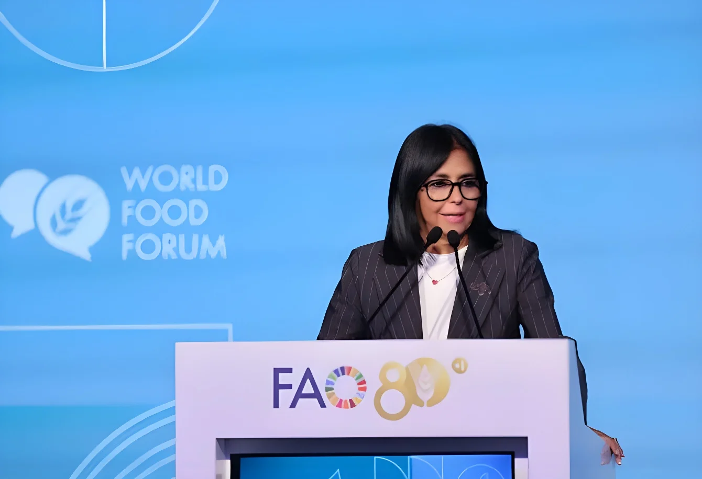

Le lundi 12 octobre 2026, la présidente par intérim du Venezuela, Delcy Rodríguez, a pris la parole au Forum mondial de l'alimentation, au siège de la FAO à Rome. Elle y a présenté le plan « Venezuela Alimenta » et annoncé une loi sur l'économie locale, avec un objectif : retrouver avant 2030 des niveaux « compatibles avec la faim zéro ». Un discours qui impute la crise alimentaire aux sanctions, prononcé par une dirigeante elle-même interdite de séjour dans l'Union européenne, pendant que des Vénézuéliens de Rome manifestaient devant le bâtiment.
Le Forum mondial de l'alimentation s'est ouvert le lundi 12 octobre à Rome et dure jusqu'au vendredi 16, jour de la Journée mondiale de l'alimentation. Organisé chaque année par l'Organisation des Nations unies pour l'alimentation et l'agriculture (FAO), il a pour thème en 2026 « Innover aujourd'hui, nourrir demain » et coïncide avec les 80 ans de l'organisation, fondée le 16 octobre 1945 à Québec. Le directeur général, le Chinois Qu Dongyu, a ouvert la séance plénière ; le président cubain Miguel Díaz-Canel est intervenu par vidéo.
Arrivée la veille avec le ministre des Affaires étrangères, Félix Plasencia, Delcy Rodríguez a été accueillie par l'économiste en chef de la FAO, Máximo Torero, coordinateur du forum. Elle assure l'intérim de la présidence depuis la capture de Nicolás Maduro par l'armée américaine, le 3 janvier, et Rome est l'une de ses rares tribunes internationales depuis sa rencontre avec Donald Trump à l'ONU, en septembre.
Le plan « Venezuela Alimenta » doit, selon elle, « engrener tous les processus de production alimentaire » vers un « objectif suprême », la faim zéro. Il s'accompagne d'une nouvelle loi sur l'économie locale, qui sera soumise à l'Assemblée nationale « dans quelques jours » : elle veut relier l'économie communale, les petits entrepreneurs et la grande industrie agroalimentaire. Delcy Rodríguez a aussi promis la sécurité juridique de la terre et de la propriété, pour que les agriculteurs puissent investir « avec certitude », et la conversion de la rente énergétique en capacités de production durables. Elle a parlé d'aliments accessibles à tous et d'« agriculture régénératrice ». Ni budget ni calendrier détaillé n'ont été rendus publics. Le gouvernement mise sur une référence ancienne : en 2013, la FAO avait distingué le Venezuela parmi les pays ayant atteint l'objectif du millénaire de réduire de moitié la proportion de personnes souffrant de la faim. Depuis 2016, les colis subventionnés des comités locaux d'approvisionnement (CLAP) restent le principal outil d'aide alimentaire.
Selon le rapport annuel des Nations unies sur l'état de la sécurité alimentaire (SOFI), publié en juillet 2026, 5,3 % des Vénézuéliens sont sous-alimentés, soit environ 1,5 million de personnes. C'est loin du pic de la crise : entre 2012-2014 et 2016-2018, la part de la population sous-alimentée avait presque quadruplé, de 6,4 % à 21,2 %, soit 6,8 millions de personnes. À la tribune, Delcy Rodríguez est allée plus loin : 3 % en 2026, et une malnutrition aiguë des moins de cinq ans tombée de 14,8 % en 2019 à 1,3 % en 2025. Ces chiffres sont ceux du gouvernement : la FAO ne les a pas encore confirmés.
| Sous-alimentation au Venezuela | Part de la population |
|---|---|
| 2026 (gouvernement) | 3 % |
| Rapport FAO 2026 | 5,3 % |
| 2016-2018 | 21,2 % |
| 2012-2014 | 6,4 % |
Rencontre avec Qu Dongyu, puis médaille de l'Organisation italo-latino-américaine.
Discours au Forum mondial de l'alimentation ; manifestation de la diaspora.
Arrivée de Delcy Rodríguez à Rome.
Tête-à-tête avec Donald Trump à New York.
Capture de Nicolás Maduro ; Delcy Rodríguez assure l'intérim.
L'Union européenne inscrit Delcy Rodríguez sur sa liste de sanctions.
Le discours a suivi le récit officiel de Caracas. Le Venezuela aurait fait de grands progrès contre la faim au début du siècle, avant qu'une « profonde confrontation politique interne » ne provoque une forte contraction économique, aggravée à partir de 2017 par l'imposition progressive de « mesures coercitives unilatérales », le terme qu'emploie Caracas pour les sanctions américaines et européennes. Delcy Rodríguez a demandé la fin des mesures qui, « en marge du droit international », pèsent sur le droit à l'alimentation, et affirmé que la nourriture ne devait pas servir d'« instrument de pression ». Elle a aussi salué le dialogue avec des figures de l'opposition et le dialogue diplomatique avec les États-Unis, qui auraient rendu la stabilité nécessaire pour produire, et décrit une « transformation ordonnée, institutionnelle et vérifiable ».
« Estamos a muy poco de lograrlo nuevamente con programas de alimentación social más robustos. »
— Delcy Rodríguez, Forum mondial de l'alimentation, Rome, 12 octobre 2026 (traduction : « Nous sommes tout près d'y parvenir de nouveau, avec des programmes d'alimentation sociale plus solides. »)Depuis juin 2018, Delcy Rodríguez figure sur la liste des personnes sanctionnées par l'Union européenne, avec une interdiction d'entrer dans l'espace Schengen et un gel de ses avoirs, mesures prolongées jusqu'en janvier 2027. Son voyage a été rendu possible par l'accord de siège qui lie l'Italie à la FAO et protège les délégations venues aux réunions de l'ONU. Aucun membre du gouvernement italien ne l'attendait à l'aéroport. Le cas va se reposer en novembre : le gouvernement de Pedro Sánchez l'a invitée au sommet ibéro-américain de Madrid et a demandé en mai une dérogation à Bruxelles, après avoir échoué à la faire retirer de la liste. Le sujet est sensible à Madrid depuis le « Delcygate » : en janvier 2020, malgré l'interdiction, Delcy Rodríguez avait fait escale à l'aéroport de Barajas, où l'avait rejointe le ministre des Transports de l'époque, José Luis Ábalos.
Devant le siège de la FAO, des Vénézuéliens installés en Italie se sont rassemblés avec drapeaux et pancartes. Pour eux, l'héritière de Maduro est responsable de « la faim et la misère » qu'elle prétend combattre ; ils dénonçaient les coupures d'eau et d'électricité et des salaires qui ne permettent pas de vivre. Plus de 7,9 millions de Vénézuéliens ont quitté leur pays depuis le milieu des années 2010, selon la plateforme R4V des Nations unies.
Le mardi 13 octobre, Delcy Rodríguez s'est entretenue avec Qu Dongyu de la sécurité alimentaire mondiale et de la relance de la productivité agricole vénézuélienne. Elle a ensuite été décorée par Giorgio Silli, secrétaire général de l'Organisation italo-latino-américaine (IILA), d'une médaille pour les 60 ans de l'institution, et l'a remerciée pour son aide après le double séisme du 24 juin. « Je viens ici ratifier l'amitié entre l'Italie et le Venezuela », a-t-elle déclaré. Giorgio Silli lui a répondu que l'IILA était « votre maison ici à Rome », et « la maison de toute l'Amérique latine ».
À Rome, Delcy Rodríguez a choisi un terrain où son gouvernement peut afficher des progrès mesurés par l'ONU elle-même : la sous-alimentation a nettement reculé depuis le pire de la crise. Le message s'adresse moins aux Vénézuéliens qu'aux capitales qui hésitent encore à traiter avec l'intérim, à commencer par Bruxelles.
Reste l'écart entre la tribune et le terrain. Les chiffres les plus flatteurs sont ceux du gouvernement, le plan n'a ni budget ni calendrier, et les manifestants du dehors rappellent que l'exil de millions de personnes fait aussi partie du bilan. En liant la faim aux sanctions, Caracas fait de l'alimentation un argument diplomatique, au moment même où elle demande qu'elle ne soit jamais un instrument de pression.
El lunes 12 de octubre de 2026, la presidenta encargada de Venezuela, Delcy Rodríguez, intervino en el Foro Mundial de la Alimentación, en la sede de la FAO en Roma. Allí presentó el plan «Venezuela Alimenta» y anunció una ley de economía local, con un objetivo: recuperar antes de 2030 niveles «compatibles con el hambre cero». Un discurso que atribuye la crisis alimentaria a las sanciones, pronunciado por una dirigente a la que la Unión Europea prohíbe la entrada, mientras venezolanos residentes en Roma protestaban ante el edificio.
El Foro Mundial de la Alimentación se inauguró el lunes 12 de octubre en Roma y dura hasta el viernes 16, Día Mundial de la Alimentación. Organizado cada año por la Organización de las Naciones Unidas para la Alimentación y la Agricultura (FAO), tiene como lema en 2026 «Innovar hoy. Alimentar el mañana» y coincide con los 80 años de la organización, fundada el 16 de octubre de 1945 en Quebec. Su director general, el chino Qu Dongyu, abrió la sesión plenaria; el presidente cubano Miguel Díaz-Canel intervino por vídeo.
Llegada la víspera con el canciller Félix Plasencia, Delcy Rodríguez fue recibida por el economista jefe de la FAO, Máximo Torero, coordinador del foro. Ejerce la presidencia encargada desde la captura de Nicolás Maduro por el ejército estadounidense, el 3 de enero, y Roma es una de sus pocas tribunas internacionales desde su encuentro con Donald Trump en la ONU, en septiembre.
El plan «Venezuela Alimenta» debe, según ella, «engranar todos los procesos productivos de alimentos» hacia un «supremo objetivo», el hambre cero. Lo acompaña una nueva ley para la economía local, que se presentará a la Asamblea Nacional «en unos días»: quiere vincular la economía comunal, los emprendedores y la gran industria agroalimentaria. Delcy Rodríguez prometió también seguridad jurídica sobre la tierra y la propiedad, para que los productores puedan invertir «con certeza», y convertir la renta energética en capacidades productivas duraderas. Habló de alimentos asequibles para todos y de «agricultura regenerativa». No se han hecho públicos ni un presupuesto ni un calendario detallado. El Gobierno se apoya en una referencia antigua: en 2013, la FAO distinguió a Venezuela entre los países que habían alcanzado el objetivo del milenio de reducir a la mitad la proporción de personas que padecen hambre. Desde 2016, las cajas subvencionadas de los Comités Locales de Abastecimiento y Producción (CLAP) siguen siendo la principal herramienta de ayuda alimentaria.
Según el informe anual de las Naciones Unidas sobre el estado de la seguridad alimentaria (SOFI), publicado en julio de 2026, el 5,3 % de los venezolanos está subalimentado, unos 1,5 millones de personas. Lejos queda lo peor de la crisis: entre 2012-2014 y 2016-2018, la proporción de subalimentados casi se cuadruplicó, del 6,4 % al 21,2 %, es decir, 6,8 millones de personas. En la tribuna, Delcy Rodríguez fue más allá: un 3 % en 2026 y una desnutrición aguda en menores de cinco años que habría pasado del 14,8 % en 2019 al 1,3 % en 2025. Son cifras del Gobierno que la FAO todavía no ha confirmado.
| Subalimentación en Venezuela | Porcentaje de la población |
|---|---|
| 2026 (Gobierno) | 3 % |
| Informe FAO 2026 | 5,3 % |
| 2016-2018 | 21,2 % |
| 2012-2014 | 6,4 % |
Reunión con Qu Dongyu y medalla de la Organización Ítalo-Latinoamericana.
Discurso en el Foro Mundial de la Alimentación; protesta de la diáspora.
Delcy Rodríguez llega a Roma.
Encuentro con Donald Trump en Nueva York.
Captura de Nicolás Maduro; Delcy Rodríguez asume la presidencia encargada.
La Unión Europea incluye a Delcy Rodríguez en su lista de sanciones.
El discurso siguió el relato oficial de Caracas. Venezuela habría avanzado mucho contra el hambre a comienzos de siglo, antes de que una «profunda confrontación política interna» provocara una fuerte contracción económica, agravada desde 2017 por la imposición progresiva de «medidas coercitivas unilaterales», el término que usa Caracas para las sanciones estadounidenses y europeas. Delcy Rodríguez pidió poner fin a las medidas que, «al margen del derecho internacional», afectan al derecho a la alimentación, y afirmó que los alimentos no deben ser un «instrumento de presión». Elogió además el diálogo con actores de la oposición y el diálogo diplomático con Estados Unidos, que habrían devuelto la estabilidad necesaria para producir, y describió un «proceso de transformación ordenado, institucional y verificable».
«Estamos a muy poco de lograrlo nuevamente con programas de alimentación social más robustos.»
— Delcy Rodríguez, Foro Mundial de la Alimentación, Roma, 12 de octubre de 2026Desde junio de 2018, Delcy Rodríguez figura en la lista de personas sancionadas por la Unión Europea, con prohibición de entrar en el espacio Schengen y congelación de bienes, medidas prorrogadas hasta enero de 2027. Su viaje fue posible gracias al acuerdo de sede entre Italia y la FAO, que protege a las delegaciones que acuden a las reuniones de la ONU. Ningún miembro del Gobierno italiano la esperaba en el aeropuerto. El caso volverá a plantearse en noviembre: el Gobierno de Pedro Sánchez la invitó a la Cumbre Iberoamericana de Madrid y pidió en mayo una excepción a Bruselas, tras fracasar en su intento de sacarla de la lista. El asunto es delicado en Madrid desde el «Delcygate»: en enero de 2020, pese a la prohibición, Delcy Rodríguez hizo escala en el aeropuerto de Barajas, donde se reunió con ella el entonces ministro de Transportes, José Luis Ábalos.
Ante la sede de la FAO, venezolanos residentes en Italia se concentraron con banderas y pancartas. Para ellos, la heredera de Maduro es responsable del «hambre y la miseria» que dice combatir; denunciaban los cortes de agua y de luz y unos salarios que no alcanzan para vivir. Más de 7,9 millones de venezolanos han salido de su país desde mediados de la década de 2010, según la plataforma R4V de las Naciones Unidas.
El martes 13 de octubre, Delcy Rodríguez conversó con Qu Dongyu sobre la seguridad alimentaria mundial y la recuperación de la productividad agrícola venezolana. Después fue condecorada por Giorgio Silli, secretario general de la Organización Ítalo-Latinoamericana (IILA), con una medalla por los 60 años de la institución, a la que agradeció su ayuda tras el doblete sísmico del 24 de junio. «Yo vengo aquí a ratificar la amistad Italia-Venezuela», declaró. Giorgio Silli le respondió que la IILA «es vuestra casa aquí en Roma», y «la casa de toda América Latina».
En Roma, Delcy Rodríguez eligió un terreno en el que su Gobierno puede exhibir avances medidos por la propia ONU: la subalimentación ha retrocedido claramente desde lo peor de la crisis. El mensaje va dirigido menos a los venezolanos que a las capitales que aún dudan en tratar con la presidencia encargada, empezando por Bruselas.
Queda la distancia entre la tribuna y la calle. Las cifras más favorables son las del Gobierno, el plan no tiene presupuesto ni calendario, y los manifestantes de fuera recuerdan que el exilio de millones de personas también forma parte del balance. Al vincular el hambre con las sanciones, Caracas convierte la alimentación en un argumento diplomático, justo cuando pide que nunca sea un instrumento de presión.